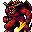

バルログ Balrug
英語版 CrawlWiki の記事「Balrug」(0.32 向け、2025-01-03 版)の翻訳です。原文の著者は編集履歴をご覧ください。
この記事は 0.32 の時点の内容で、最新の 0.34 とは違うところがあるかもしれません。
| バルログ 2  | |
|---|---|
| HP | 50-103 |
| HD | 14 |
| XP | 1205 |
| 速度 | 12 |
| AC | 5 |
| EV | 12 |
| 意志力 | 160 |
| 攻撃1 | 25(打撃: 火炎)
|
| 耐性 | rF+++ rPois+ rMiasma rN+++ rTorm |
| 弱点 | 冷気 神聖 |
| 生息地 | 陸上 |
| 知能 | 人間並み |
| 使用 | 武器と防具 初期装備 扉を開ける |
| 分類 | 悪魔 |
| 体格 | 大きい |
| 種類 | バルログ、バルログ |
| フラグ | 戦士 霊視 飛行 邪悪 |

| 巨大で非常に強力なデーモンだ。炎と影とに包まれている。 |
基本情報
バルログは荒々しい2級悪魔だ。ブランドつきの悪魔の鞭を持っていることが多く、強力な炎の魔術も使う。素手でも、一撃ごとにかなりの火炎ダメージ(14-27 HP)を与えてくる。
呪文
| 呪文セット I | ||
|---|---|---|
| スロット1 | 猛火の矢 (3d23) (6) | 魔法フラグ |
| スロット2 | ファイアボール (3d23) (5) | 魔法フラグ |
| スロット3 | 火葬の矢 (2d14/ターン) (5) | 魔法フラグ |
| スロット4 | 打擲の一撃 (7-17) (LOS) | 魔法フラグ |
小技
- 相手にするときは、火炎耐性が高ければ高いほどよい。
- バルログは冷気に弱い。それなりに育った氷の精霊使いや妖術師なら、さほど苦労しないはずだ。ほかのキャラクターも、冷気のブランドの武器で殴ったり、吹雪のワンドを撃ち込んだりして、この弱点を突ける。
- 図体に惑わされてはいけない。バルログはたいていのキャラクターより足が速い。
- 鈍器の使い手なら、バルログの持ち物は見ておきたい。悪魔の鞭はゲーム中でも指折りの武器だからだ。
こぼれ話
バルログ(balrug)は、J・R・R・トールキンの小説『指輪物語』に出てくる、炎の鞭を振るう悪魔バルログ(balrog)とほとんど同じものだ。